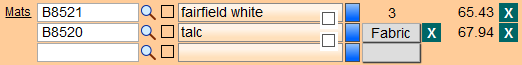

Pricing Options for Fabric Overview
FrameReady allows you to price the fabric by one means and the substrate upon which it may be mounted, by another, e.g. a Code Table.
Are you looking for the Pricing Options and Defaults button?
Before You Begin...
Important: We recommend that you first customize your materials list to remove unwanted items. You can always come back later and tweak your prices; so don’t worry about making them absolutely perfect the first time.
Default Formula for Pricing Fabric
Retail Price = Required Length* x Markup + Set Price
* yards or metres; rounded up to nearest 1/10
-
The pricing default for Fabric has a Markup of 3
-
Additionally, a Set Price of $3.00 is on all records in the Fabric group.
-
Fabrics are automatically selected to be priced by the Linear Yard. But can also be priced by United Inch Area, Square Inch, Square Foot, Square Yard, United, and Linear Inch.
-
The default pricing does not include a substrate; it is for the Fabric only.
|
Wholesale Cost |
Markup |
Set Price |
|
all costs |
3 |
3.00 |
-
When creating a new Fabric item in the Price Codes file, the default for pricing will be Linear Yard.
-
The orientation of the frame affects the pricing of fabric by the linear yard. This is because the required yardage is determined by the grain of the fabric which runs from bolt edge to bolt edge. In almost all situations the grain of the fabric will run horizontally across the frame. The orientation of the frame will determine the required yardage needed to complete the job. Yardage is calculated by the height of the frame and its orientation. The price is calculated based on the length of fabric required. A frame with a vertical orientation requires more yardage than a frame with a horizontal orientation.
Note: Although the UI measurement is the same for both pieces, the frame with the vertical orientation requires more yardage than the horizontal one.
-
FrameReady allows you to combine two pricing elements; pricing the fabric by one means and the substrate upon which it may be mounted, by another, i.e. a Code Table. This is done in Price Codes file > Fabric group side bar button > Fabric Pricing tab > select the Combine Formula and Code Pricing check box in the middle of the blue block tab.
Pricing for Fabric Wrapped Mats
Substrate can either be included in your pricing or it can be a stand-alone item. Read below about both methods and select which would work best for you.
Option 1: Substrate Included in the Formula
-
This is the easiest method. In addition to the markup and Set Price, a Code Table can be added to the pricing to cover the cost of a substrate. The code table is based on a fixed price per UI. You can select an existing code table from the list or create your own. To combine the code table with your existing markup and set price, click on the Combine Formula and Code Pricing box in the middle of the Fabric Pricing tab.
-
In addition to the Markup and Set Price, a Code Table can be added to the pricing to cover the cost of a substrate. The Code Table is based on a fixed price per united inch. You can select an existing Code Table from the list or create your own.
-
To combine the Code Table with your existing markup and set price, click on the Combine Formula and Code Pricing checkbox on the Fabric Pricing tab.
-
A liner which will be wrapped with fabric should be entered into the appropriate frame field, e.g. Frame1, Frame2, etc.
-
The fabric should be entered in the Glazing/Fabric field. The fabric will not be listed in the glass pop-up list.
-
Tip: you can use the grey search button located in the Glazing/Fabric detail.
-
Type the fabric number into the empty field above the drop-down list.
-
Click on the Fit to Frame field and select 2 to size the fabric to the outside edge of Frame 1.
For example, a liner in Frame1 will have the fabric fitted to the inside lip of Frame2.
Option 2: Substrate Priced Separately
-
This method has more steps to it. As a stand alone item, the substrate is entered separately on the Work Order in the matboard field. This prices the substrate exactly for the quality that it is. The fabric is then entered as the second matboard and the word “Fabric” is selected for the reveal amount to indicate that it is wrapped over the previous matboard. (The fabric can be entered above or below the mat it is wrapped over.) You would also need to enter a component in the Mount/Stretch field as well to reflect the cost of glue and labor.
-
As a stand alone item, the substrate is entered separately on the Work Order in the Matboard field. This prices the substrate exactly for the quantity that it is.
-
The fabric is then entered in the second Matboard field and the word "Fabric" is selected for the reveal amount to indicate that it is wrapped over the first matboard entry. (The fabric can be entered above or below the mat it is wrapped over.)

Orientation and Linear Yard
-
When creating a new Fabric item in the Price Codes file, the default for pricing is Linear Yard.
-
The orientation of the frame affects the pricing of fabric by the linear yard. This is because the required yardage is determined by the grain of the fabric which runs from bolt edge to bolt edge. In almost all situations the grain of the fabric will run horizontally across the frame. The orientation of the frame will determine the required yardage needed to complete the job. Yardage is calculated by the height of the frame and its orientation. The price is calculated based on the length of fabric required.
-
A frame with a vertical orientation requires more yardage than a frame with a horizontal orientation:
|
|
Vertical |
|
|
Horizontal |


Note: Although the UI measurement is the same for both pieces, the frame with the vertical orientation requires more yardage than the horizontal one.
-
FrameReady allows you to price the fabric by one means and the substrate upon which it may be mounted, by another, e.g. a Code Table. Do this by selecting the Combined Formula and Code Pricing checkbox in the Fabric Pricing tab.
© 2023 Adatasol, Inc.